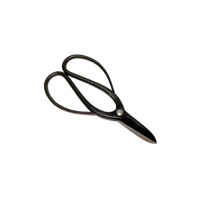
MAS-0001
Trimming shears
- 180mm (7.09in)
- 150g (0.33lb)
For heavy duty. Original Bonsai shears in Japan. The longest-seller over 50 years.
0000 Standard carbon
MAS-0001
For heavy duty. Original Bonsai shears in Japan. The longest-seller over 50 years.
0000 Standard carbon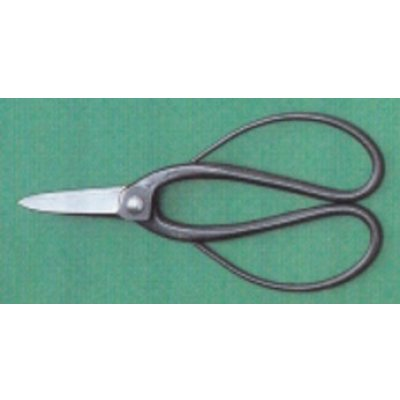
MAS-S-0001
For heavy duty. Original Bonsai shears in Japan. The longest-seller over 50 years.
S Patent series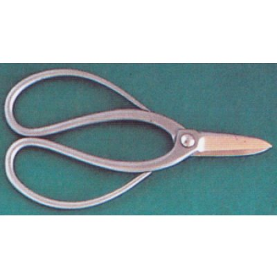
MAS-SS-001
For heavy duty. Original Bonsai shears in Japan. The longest-seller over 50 years.
SS premium / made-to-order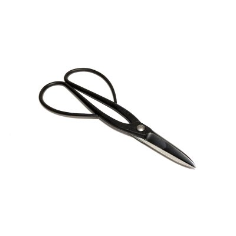
MAS-0002
Long handled shears for wide application. The longest-seller over 50 years with No.1.
0000 Standard carbon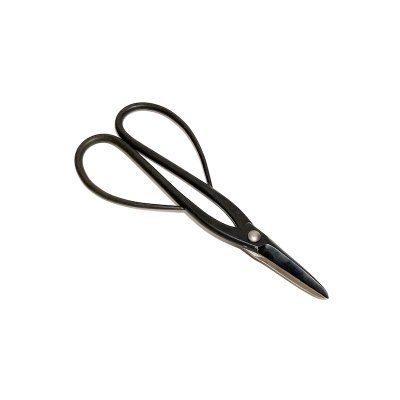
MAS-S-0002
Long handled shears for wide application. The longest-seller over 50 years with No.1.
S Patent series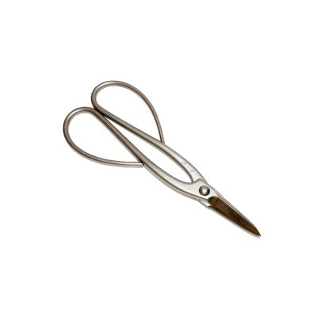
MAS-SS-002
Long handled shears for wide application. The longest-seller over 50 years with No.1.
SS premium / made-to-order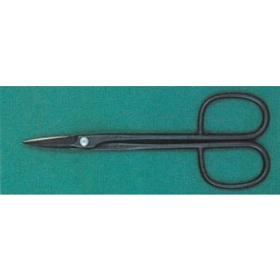
MAS-0028
Middle size shears for small Bonsai or narrow places. Also the longest-seller with No.1 and No.2. HIGH quality shears for advanced class.
0000 Standard carbon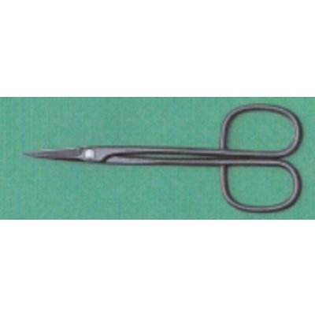
MAS-S-0028
Middle size shears for small Bonsai or narrow places. Also the longest-seller with No.1 and No.2. HIGH quality shears for advanced class.
S Patent series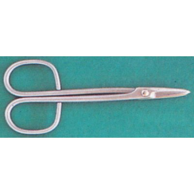
MAS-SS-028
Middle size shears for small Bonsai or narrow places. Also the longest-seller with No.1 and No.2. HIGH quality shears for advanced class.
SS premium / made-to-order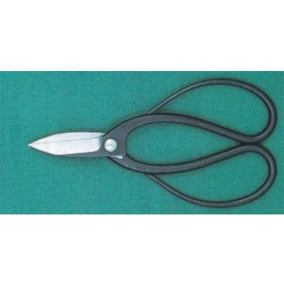
MAS-0051
Heavy duty durable shears for professionals.
0050 Prime carbon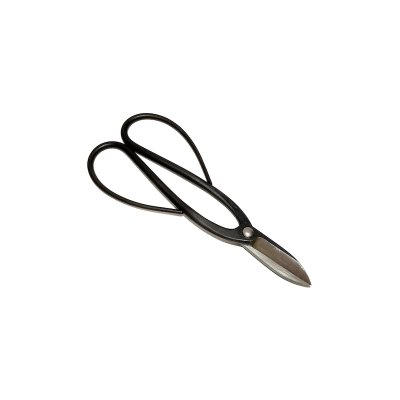
MAS-0052
Long handled durable shears for professionals.
0050 Prime carbon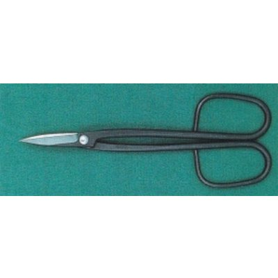
MAS-0053
Middle size durable shears for professionals. Highest quality super finished shears, specially made for professionals and advanced amateurs.
0050 Prime carbon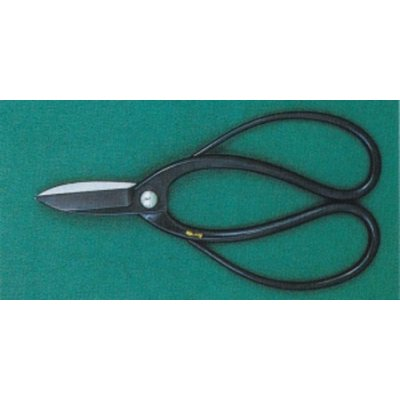
MAS-0101
Highest quality super finished Trimming Shears.
0100 Specially made carbon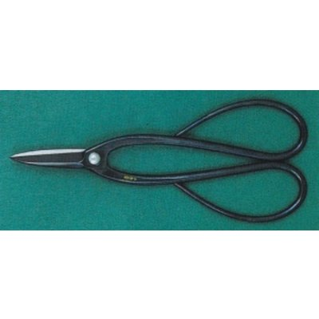
MAS-0102
Highest quality super finished Trimming Shears with long handle.
0100 Specially made carbon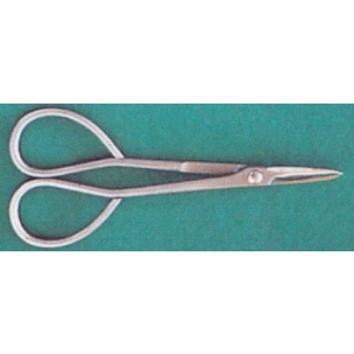
MAS-SS-103
The wide application Bud Trimming Shears. Also suitable for small Bonsai trimming work.
SS premium / made-to-order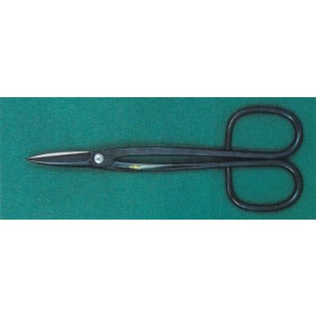
MAS-0128
Highest quality super finished Trimming Shears middle size.
0100 Specially made carbon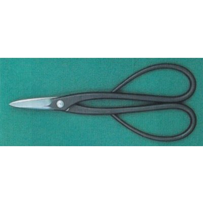
MAS-0201
Heavy duty shears.
0200 Type A / B / C carbon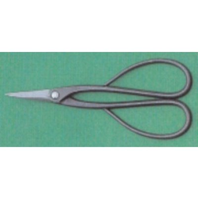
MAS-S-0201
Heavy duty shears.
S Patent series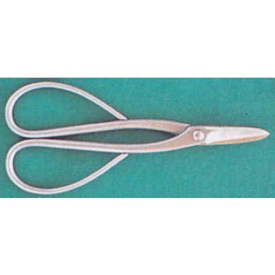
MAS-SS-201
Heavy duty shears.
SS premium / made-to-order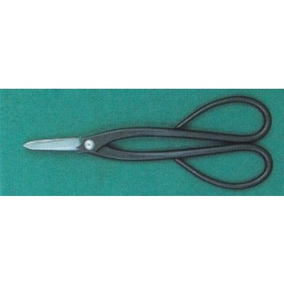
MAS-0202
Wide application shears.
0200 Type A / B / C carbon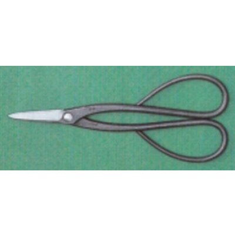
MAS-S-0202
Wide application shears.
S Patent series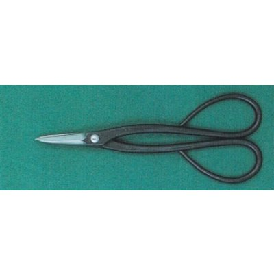
MAS-0228
Suitable for small Bonsai work.
0200 Type A / B / C carbon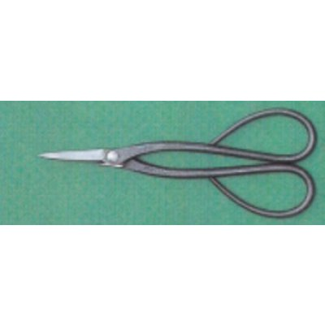
MAS-S-0228
Suitable for small Bonsai work.
S Patent series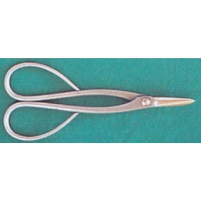
MAS-SS-228
Suitable for small Bonsai work.
SS premium / made-to-order
MAS-0301
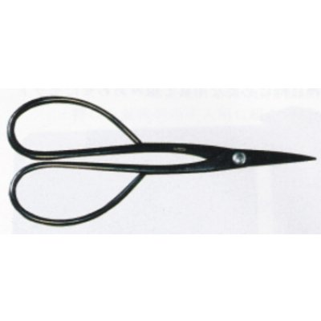
MAS-0302
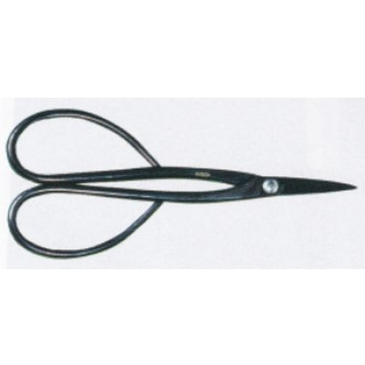
MAS-0328
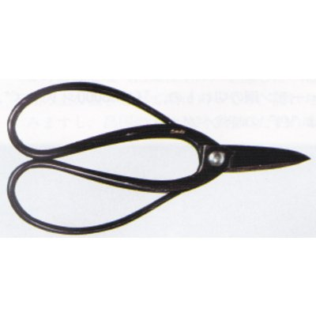
MAS-0351
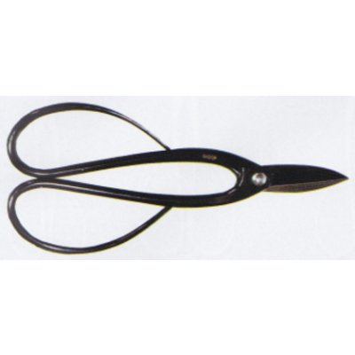
MAS-0352
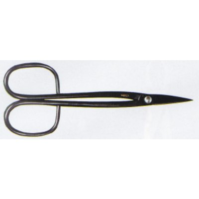
MAS-0353
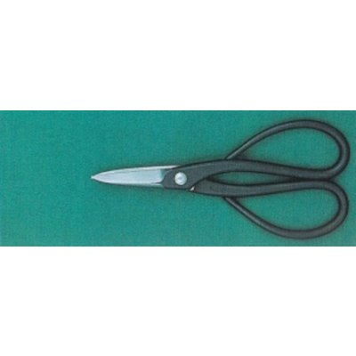
MAS-0801
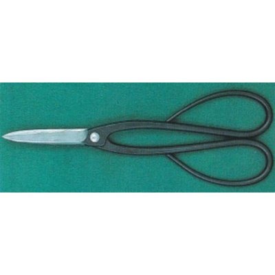
MAS-0802
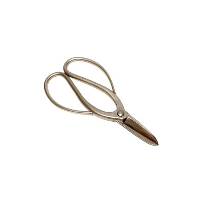
MAS-8001
For heavy duty. Original Bonsai shears in Japan. The longest-seller over 50 years.
8000 Stainless-coated carbon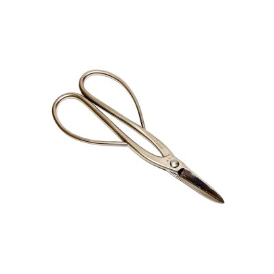
MAS-8002
Long handled shears for wide application. The longest-seller over 50 years with No.1.
8000 Stainless-coated carbon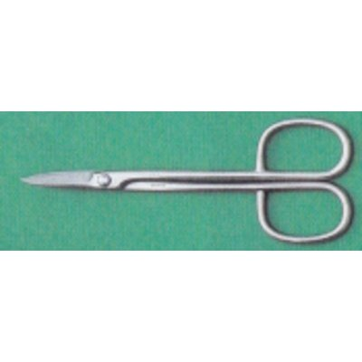
MAS-8028
Middle size shears for small Bonsai or narrow places. Also the longest-seller with No.1 and No.2. HIGH quality shears for advanced class.
8000 Stainless-coated carbon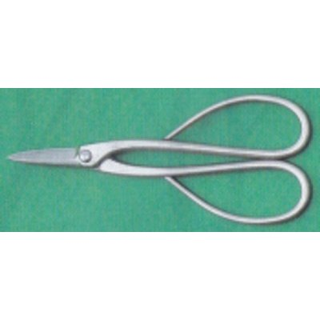
MAS-8201
Heavy duty shears.
8000 Stainless-coated carbon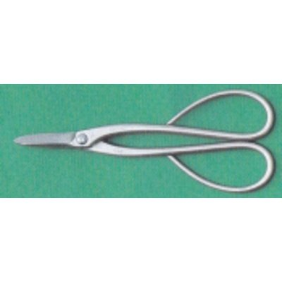
MAS-8202
Wide application shears.
8000 Stainless-coated carbon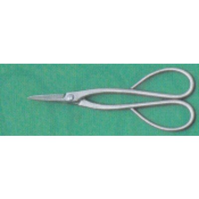
MAS-8228
Suitable for small Bonsai work.
8000 Stainless-coated carbon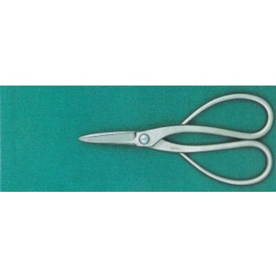
MAS-8801
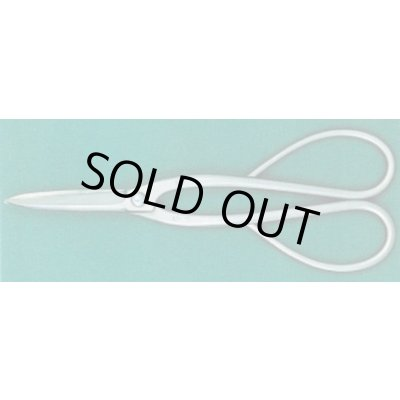
MAS-8802
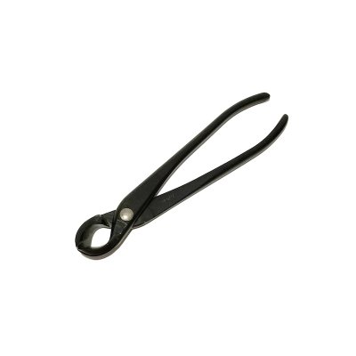
MAS-0016
Very famous original cutter No.16. The best-seller tool in Bonsai world. Use at the branch diameter below half of the blade.
0000 Standard carbon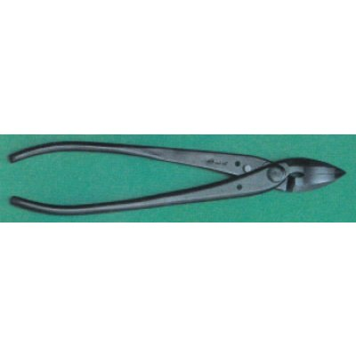
MAS-0061
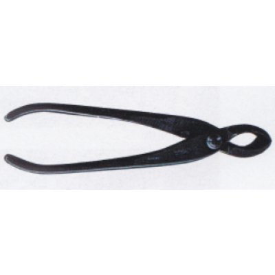
MAS-0116
Very handy cutter for middle and small size branches. Also the best-seller with No.16. Use at the branch diameter below half of the blade.
0000 Standard carbon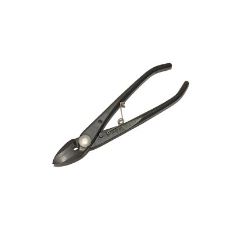
MAS-0161
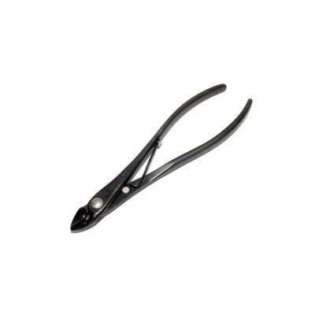
MAS-0216
Extra narrow cutter for twig. Very convinient tool for group planting, SATSUKI AZALEA or narrow places. This tool have come to be the mew best-seller tool among the advanced Bonsai people. Use at the twig diameter below 3mm.
0000 Standard carbon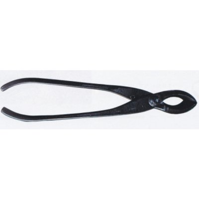
MAS-0316
Large size mighty cutter for heavy duty work. Use at the branch diameter below half of the blade.
0000 Standard carbon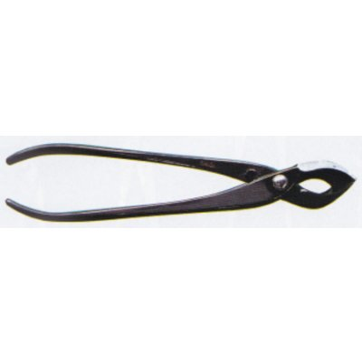
MAS-0416
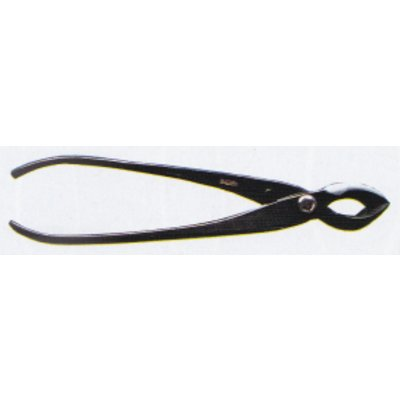
MAS-0516
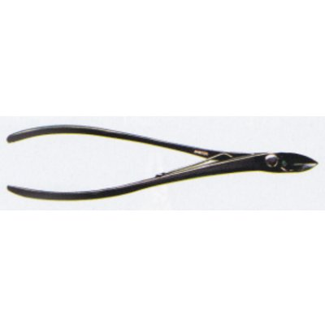
MAS-0616
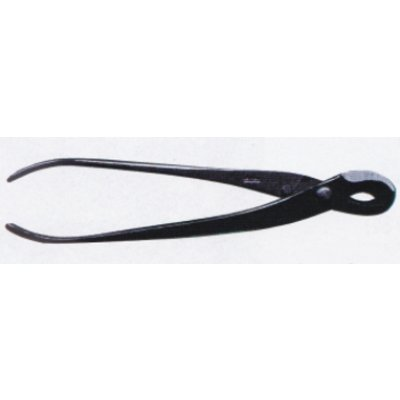
MAS-0716
The spherical blades brings the beautiful concave cutting end. Use at the branch diameter below half of the blade.
0000 Standard carbon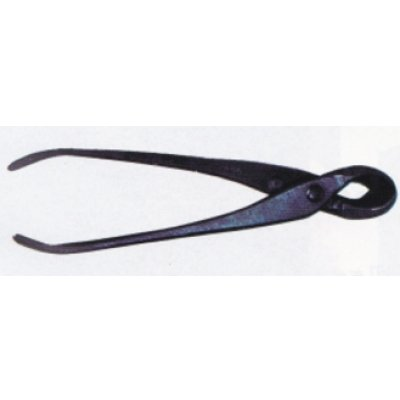
MAS-0816
Handy type spherical blade cutter. Use at the branch diameter below half of the blade.
0800 S-series (ergonomic)MAS-8016
Very famous original cutter No.16. The best-seller tool in Bonsai world. Use at the branch diameter below half of the blade.
8000 Stainless-coated carbonMAS-8061
MAS-8116
Very handy cutter for middle and small size branches. Also the best-seller with No.16. Use at the branch diameter below half of the blade.
8000 Stainless-coated carbonMAS-8161
MAS-8216
Extra narrow cutter for twig. Very convinient tool for group planting, SATSUKI AZALEA or narrow places. This tool have come to be the mew best-seller tool among the advanced Bonsai people. Use at the twig diameter below 3mm.
8000 Stainless-coated carbonMAS-8316
Large size mighty cutter for heavy duty work. Use at the branch diameter below half of the blade.
8000 Stainless-coated carbonMAS-8716
The spherical blades brings the beautiful concave cutting end. Use at the branch diameter below half of the blade.
8000 Stainless-coated carbonMAS-8816
Handy type spherical blade cutter. Use at the branch diameter below half of the blade.
8000 Stainless-coated carbonMAS-0007
Large size cutter for heavy duty work. The handle is designed for one-hand operation. Use at the wire diameters below; Maximum Al:4.88mm(# 6) Cu:4.06mm(# 8) *Fe:3.25mm(#10) *Annealed.
0000 Standard carbonMAS-0008
Very famous MASAKUNI's wire cutter No.8. The best-seller wire cutter in Bonsai world. Use at the wire diameters below; Maximum Al:4.06mm(# 8) Cu:3.25mm(#10) *Fe:2.03mm(#14) *Annealed.
0000 Standard carbonMAS-SS-008
Very famous MASAKUNI's wire cutter No.8. The best-seller wire cutter in Bonsai world. Use at the wire diameters below; Maximum Al:4.06mm(# 8) Cu:3.25mm(#10) *Fe:2.03mm(#14) *Annealed.
SS premium / made-to-orderMAS-0009
Very handy, very small shears for wire. It's small but very durable tool. Use at the wire diameters below; Maximum Al:2.03mm(#14) Cu:1.63mm(#16) *Fe:0.95mm(#20) *Annealed.
0000 Standard carbonMAS-0088
Very durable cutter. Suitable for iron wire. Use at the wire diameters below; Maximum Al:4.88mm(# 6) Cu:4.06mm(# 8) *Fe:3.25mm(#10) *Annealed.
0000 Standard carbonMAS-0108
Very cute cutter for MAME Bonsai work or thin wires at the top of the branch. Use at the wire diameters below; Maximum Al:2.03mm(#14) Cu:1.63mm(#16) *Fe:0.95mm(#20) *Annealed.
0000 Standard carbonMAS-0207
Newly designed cutter with tilt-head. Especially in unwiring of the branch-crowded trees, this head angle is very effective to catch wire easily, and brings the efficient work. Use at the wire diameters below; Maximum Al:4.88mm(# 6) Cu:4.06mm(# 8) *Fe:3.25mm(#10) *Annealed.
0000 Standard carbonMAS-0208
Handy type of No.207. Use at the wire diameters below; Maximum Al:4.88mm(# 8) Cu:4.06mm(#10) *Fe:3.25mm(#14) *Annealed.
0000 Standard carbonMAS-0307
MAS-0308
MAS-0309
MAS-0408
MAS-8007
Large size cutter for heavy duty work. The handle is designed for one-hand operation. Use at the wire diameters below; Maximum Al:4.88mm(# 6) Cu:4.06mm(# 8) *Fe:3.25mm(#10) *Annealed.
8000 Stainless-coated carbonMAS-8008
Very famous MASAKUNI's wire cutter No.8. The best-seller wire cutter in Bonsai world. Use at the wire diameters below; Maximum Al:4.06mm(# 8) Cu:3.25mm(#10) *Fe:2.03mm(#14) *Annealed.
8000 Stainless-coated carbonMAS-8009
Very handy, very small shears for wire. It's small but very durable tool. Use at the wire diameters below; Maximum Al:2.03mm(#14) Cu:1.63mm(#16) *Fe:0.95mm(#20) *Annealed.
8000 Stainless-coated carbonMAS-8107
MAS-8108
Very cute cutter for MAME Bonsai work or thin wires at the top of the branch. Use at the wire diameters below; Maximum Al:2.03mm(#14) Cu:1.63mm(#16) *Fe:0.95mm(#20) *Annealed.
8000 Stainless-coated carbonMAS-8207
Newly designed cutter with tilt-head. Especially in unwiring of the branch-crowded trees, this head angle is very effective to catch wire easily, and brings the efficient work. Use at the wire diameters below; Maximum Al:4.88mm(# 6) Cu:4.06mm(# 8) *Fe:3.25mm(#10) *Annealed.
8000 Stainless-coated carbonMAS-8208
Handy type of No.207. Use at the wire diameters below; Maximum Al:4.88mm(# 8) Cu:4.06mm(#10) *Fe:3.25mm(#14) *Annealed.
8000 Stainless-coated carbonMAS-0035
MAS-0036
Specially designed for MAME Bonsai work.
0000 Standard carbonMAS-0135
MAS-0235
The head angle brings the efficient work.
0000 Standard carbonMAS-0335
MAS-0336
The blades are spherical form in order to make concave cutting as Nos.716 and 816.
0000 Standard carbonMAS-8035
MAS-8036
Specially designed for MAME Bonsai work.
8000 Stainless-coated carbonMAS-8135
MAS-8335
MAS-8336
The blades are spherical form in order to make concave cutting as Nos.716 and 816.
8000 Stainless-coated carbonMAS-0017
Specially designed for JIN making work only.
0000 Standard carbonMAS-0117
Heavy duty pliers for JIN making work only.
0000 Standard carbonMAS-0817